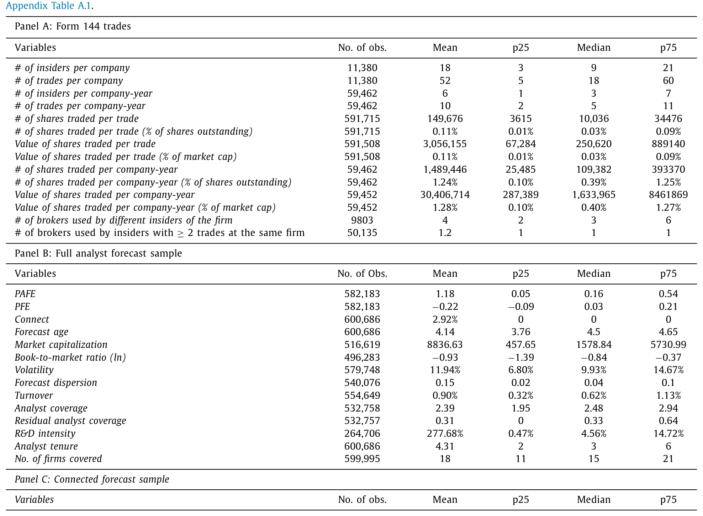
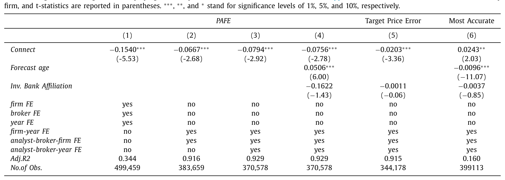
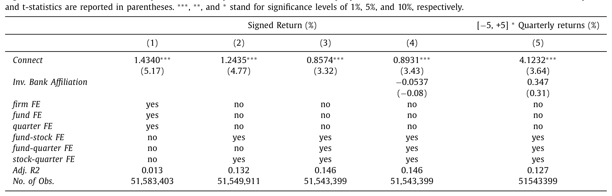
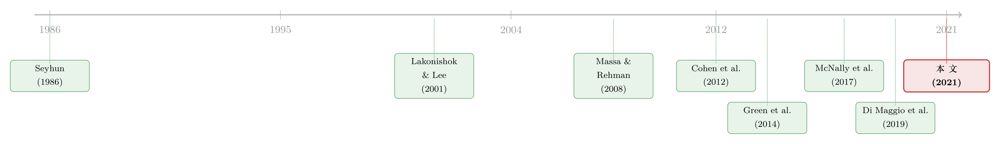

你的经纪人，比 SEC 公告知道得更多
本文读的是 Li, Mukherjee & Sen (2021, JFE)：当公司内部人通过某家券商卖股时，这家券商旗下的分析师和共同基金，会在这只股票上获得一份「持久」的信息优势——附属分析师的盈利预测准确度高出 10.5%，跟随附属基金交易这只股票，未来一个季度能多赚 89bps。关键在于，这份优势在内幕交易被 SEC 公告之后【依然存在】，挑战了「交易一披露、信息就抹平」的传统认知。
1 一个被默认的「截止日期」
先讲一件几乎所有人都默认的事。
公司内部人（insider）——高管、董事、大股东——一旦买卖自家股票，是会被市场严密注视的。原因不用多说：他们知道得比外人多。但学界和监管层有一个心照不宣的共识：内部人的这点优势，是有「截止日期」的。美国规定，内部人交易必须在两天之内向 SEC 申报，一旦申报，信息就进入公开领域，所有人重新站回同一条起跑线。换句话说，信息不对称只存在于「交易到披露」这条窄缝里；缝一闭合，游戏就结束了。
这篇论文要拆的，正是这个「默认」。
作者问了一个看似简单、却从没被认真回答过的问题：当内部人交易时，那个替他执行交易的中间人——经纪人（broker）——能不能在这个过程里，捞到一份比「两天」更长命的信息优势？
经纪人显然处在一个独特的位置上。他知道是谁在交易、交易多大、什么时候交易——而且是在 SEC 公告【之前】就知道。这一点其实早有文献注意到（后面会讲）。但本文真正想说的，比这要深一层：经纪人的优势不只是「抢跑那两天」，而是一种在公告之后仍然不消失的优势。
这是全文反复要钉死的那一个核心。
2 谁是「内部经纪人」：一张被忽略的表格
要回答这个问题，第一步是个数据活儿：你得知道每一笔内幕交易，到底是经哪家券商之手完成的。
绝大多数研究内幕交易的论文用的是 Form 4——它记录交易本身，却不记录经手的券商。本文换了个数据源：Form 144。根据 1972 年生效的 144 号规则 (Rule 144)，内部人在出售「限制性股票」（restricted shares，比如薪酬激励、私募配售得来的未注册股份）之前，必须填一张 Form 144，上面要写明【执行这笔交易的券商名称】、预计交易日期和数量。
这就是钥匙。作者把 Form 144 上手工标准化的券商名字，分两路去匹配：
- 一路匹配到
I/B/E/S的券商代码，找出附属分析师 (affiliated analyst)； - 另一路匹配到
CRSP/Thomson Reuters 的基金家族，找出附属共同基金 (affiliated mutual fund)——比如「Wells Fargo Small Cap Fund」就附属于 Wells Fargo 的券商。
数据从 1997 年开始（I/B/E/S 覆盖足够的第一年）。值得一提的是，作者这批券商样本覆盖了全部 Form 144 交易里 80% 以上的美元金额、75% 的交易笔数——足够有代表性。

Table 1
接着，一个自然的问题是：怎么从这些数据里「干净地」识别出经纪人的优势？
3 没有对照组，就自己造一个：高维固定效应
理想实验长这样：让每个内部人同时养两个经纪人，每次交易，由实验者随机指定其中一个去执行；然后比较「执行了这笔交易的经纪人」和「同样被这个内部人雇着、但这次没沾手的经纪人」之间的信息优势差异。
可现实里没人会同时雇两个私人经纪人。没有理想的对照经纪人——这是识别上的死结。
作者的破法，是用面板数据的「颗粒度」硬生生堆出一个三重差分 (triple difference)。具体做法，是在回归里同时塞进三套高维固定效应 (high-dimensional fixed effects, HDFE)。以分析师样本为例，被解释变量是预测准确度的代理 PAFE，核心解释变量是 Connect 哑变量（这位分析师所在券商，当期是否正有内部人经其交易该股），估计方程大致是：
这三套固定效应一旦叠在一起，按 Wooldridge (2007) 的说法，就等价于在估计一个三重差分。直白地讲，β 捕捉的是：这位特定分析师，在内部人经她所在券商交易之后，对这只特定股票的相对准确度，相比她自己在没有此类交易的其他时期、相比同期覆盖同一股票的其他分析师、相比她同期覆盖的其他股票，到底高出多少。
把「公司层面」「分析师层面」「时间层面」的各种潜在共因，统统用固定效应吃掉之后，剩下的那一点，只能来自一个东西——券商的附属关系。
基金那一侧用的是完全平行的 HDFE 结构，被解释变量换成「跟随该基金在这只股票上的交易所能获得的利润」。两套数据、两个完全不同的样本，唯一共享的特征就是这层券商附属关系。结果还指向同一幅图景——这本身就是一种稳健性。作者特意点出：附属基金的结果，在【没有分析师】的子样本里照样成立（比如 Fidelity 有基金但没有卖方分析师），说明这两条证据是彼此独立的。
4 主要结果：优势活过了披露日
先看分析师。结论是：附属券商的分析师，在内部人经其券商交易【之后】，对这只股票的盈利预测准确度提高了 10.5%。
再看基金。跟随附属基金在内部人所在公司股票上的交易，在内幕交易之后的那个季度，能带来 89bps（约 0.89 个百分点）的更高回报。

Table 2
但真正关键的一步在于时间点。
附属分析师发布这些预测、附属基金披露这些持仓，全都发生在内幕交易已经通过 SEC 申报【公开】之后。也就是说，当全世界都已经知道「某内部人卖了多少股」时，这家经手交易的券商，仍然握着别人没有的东西。
这就把传统认知顶翻了：信息不对称，并非随披露而蒸发。

Table 3
然后，作者做了一整套「证伪」测试来堵住其他解释。最漂亮的一组，是利用「连接的断裂」：分别考察 (1) 内部人换了券商、(2) 内部人换了工作、(3) 分析师/基金经理换了工作——这三件事都会切断本文故事所需的那条链，却不太可能影响其他（未观测的）私人关系或商业纽带。结果是：一旦连接断裂，前面所有的效应都消失了。 这说明优势确实绑定在「经纪关系」上，而非什么时不变的私交。
还有一个「类似预趋势」的检验：附属关系对预测准确度和基金盈利的影响，在内幕交易【之前】并不显著（pre-trends 干净），交易之后【立刻】最高，若此后不再有交易，则随时间衰减。这正是「由这笔交易驱动」应有的时间形态。
5 反转：连「没有信息的交易」也能被利用
到这里，故事已经足够有力。但作者又往前推了一步，给出了全文最聪明、也最反直觉的一记。
设想一个内部人，每年一月都卖掉一批限制性股票。按 Cohen et al. (2012) 的发现，这种有规律的（routine）交易，本身是不含信息的——它就是个固定的、与公司前景无关的套现习惯。问题在于，当这位内部人【第一次】在一月卖出时，外部人是看不出这将成为一个规律的，于是市场可能错把它当成利空。
可经纪人不一样。如果「这是一笔常规、无信息的交易」这件事被传到了内部经纪人那里，那么经纪人的相对优势，恰恰应该在序列里的第一笔最强，然后随着后续交易陆续到来、市场逐渐看懂这是个规律而减弱。
数据里看到的正是如此：无论是附属分析师的相对准确度，还是附属基金的交易利润，「内部经纪人优势」都从「序列第一笔」到「第三笔及以后」单调递减。
请品一下这里的精妙之处。常规来说，我们想象的内幕优势，是「知道某个利好/利空」。但这里，经纪人的优势在于知道这笔交易其实什么信息都没有——市场以为是信号，他知道是噪声。这种优势，只有在「内部人真的下了这笔单」时才会产生；如果交易根本不发生，它无从谈起。这就干净利落地排除了一个老对手解释：「会不会是券商先有了推荐，内部人跟着券商买，所以大家方向一致」——因为一笔【无信息】的常规交易，根本不存在什么「券商推荐」可言。
异质性结果也与故事吻合：当股票本身的信息环境更差、内幕交易规模更大且更不频繁时，内部经纪人的优势更大。
6 一道关于「中国墙」的旁白
读到这儿，一个聪明的读者会立刻反问：为什么经纪人愿意把信息告诉分析师？这难道不违规吗？
作者的回答很务实。卖方分析师存在的主要目的，本就是替券商招揽生意（Chung and Cho, 2005）；更准的预测能帮券商兜售自家研究、未来拉来更多客户，所以经纪人有动机去喂料。至于「中国墙」（Chinese Wall）：经纪与分析师同处券商部门、本就需要密切协作，二者之间根本谈不上有墙；而经纪人与附属基金经理分属金融集团的两个不同部门，二者之间的信息流——很可能确实越过了一道本该存在的墙。这一点，作者讲得相当坦白。
7 文献脉络
把这篇论文放回它生长的那条线上看，会更清楚它新在哪里。
最早的一脉，是关于「内部人本身拥有信息优势」的庞大文献：Seyhun (1986) 算出了内部人的交易利润，Lakonishok and Lee (2001)、Bhattacharya and Daouk (2002)、Marin and Olivier (2008) 一路把它做深做广，Cohen et al. (2012) 则教会我们区分「常规」与「机会主义」交易——这恰是本文第 5 节那记反转的支点。
第二脉，是「分析师/基金经理如何通过与公司管理层的互动获取信息」：Malloy (2005) 的地理临近、Bae et al. (2008) 的本地分析师、Cohen et al. (2008) 的董事会关系、以及与本文最近的 Green et al. (2014)——他们发现券商主办的投资者见面会能让分析师研究更有信息含量。本文的不同之处在于：信息流是被经纪人通过内幕交易过程中介的，凸显了券商作为信息中介的角色。
第三脉，也是本文要明确划清界限的那一脉，是「经纪人围绕内幕交易/订单流的优势」：McNally et al. (2017) 发现内部人经某券商交易当天，该券商其他客户会同向交易；Geczy and Yan (2005)、Barbon et al. (2019)、Di Maggio et al. (2019) 则各自刻画了经纪人如何泄露、扩散订单流信息。但这些文献里，经纪人的优势都来自「订单公开揭示之前」的抢跑——交易一披露，优势理应消散。

本文恰恰站在这条线的尽头反着说：经纪人还握有一种不同的、更长命的优势，它在交易公开之后依然存在。这对市场公平的理论与政策含义不小——交易过程产生的信息不对称，是长寿的，而非许多理论和实证研究里默认的「短命」。
（关于内部人交易与监管缝隙这个大主题，本博客还讨论过几篇有意思的相关研究：《雷达之下：不必申报的高管，在自家股票上赚了多少？》、《「提前安排好」就等于「没用内幕消息」吗？——拆开 Rule 10b5-1 的三道后门》，以及把视角拉回十八世纪的《当你不知道自己正在和董事做对手盘》。而「基金经理在哪儿下单泄露了他的本事」，则可参见《同一只股票，两个柜台》。）
8 评论与延伸（Q&A + 研究方向）
(a) 几个可能的疑问
Q：用 Form 144 而不是 Form 4，会不会让样本偏窄、只覆盖「卖出」？
会，这是个真实的局限。Rule 144 管的是限制性/控制类股份的【出售】，所以本文的内幕交易几乎都是卖出，识别经纪人也只能落在卖出侧。好处是 Form 144 强制申报经纪人名称——这是 Form 4 没有的钥匙。作者用 IA 的检验说明这些卖出平均而言确实对未来股价有信息含量，且券商样本覆盖了 80% 美元金额，代表性尚可；但「只有卖方」这一点，读者心里要有数。
Q：三套高维固定效应叠出来的「三重差分」，真的等于随机分配经纪人吗？
不等于，它是个观测数据里的近似。它能吸收掉公司-时间、分析师-券商-公司、分析师-券商-时间三个维度的共因，但无法排除「恰好与该笔交易同时发生、且只作用于这一对分析师-公司」的时变扰动。作者用「连接断裂」和「干净的预趋势」来补强因果解读——一旦关系切断效应即消失、交易前无效应，这两点是说服力的真正来源，而非固定效应本身。
Q：和 McNally (2017)、Di Maggio (2019) 这些「经纪人泄露订单流」的论文，区别到底在哪？
在「优势的寿命」。那些论文里，经纪人的优势来自知道订单【尚未公开】，所以交易一披露就该消失。本文证明的是另一种、更长命的优势：它在内幕交易已经公开之后仍然存在。第 5 节的「常规交易」检验是把这种区别钉死的关键——它展示的优势甚至来自「知道这笔交易没有信息」。
Q：为什么附属基金的优势更值得警惕？
因为它更可能跨越了「中国墙」。分析师和经纪同处券商部门，协作是常态，本就无墙可言；但基金经理与经纪分属金融集团两个不同部门，信息从经纪流向附属基金，很可能正是合规上本应被隔断的那条路径。这把一个学术发现，直接顶到了监管的痛点上。
Q：会不会其实是「券商先有推荐，内部人跟着券商买」，所以大家同向，与经纪关系无关？
这是最硬的对手解释，作者专门用「序列第一笔常规交易」把它排除了。常规、无信息的交易背后不存在什么券商推荐；可优势偏偏在序列第一笔最强、之后单调衰减。这种形态只能由「经纪人通过执行这笔交易获知了它不含信息」来解释，而不可能由「事先就有的推荐」来解释。
Q：10.5% 的预测准确度提升和 89bps 的季度收益，经济意义上算大吗？
不算小。对卖方分析师而言，相对准确度提升一成，足以改变其在 I/B/E/S 排名中的位置；而对基金，扣费前 89bps 的季度超额、且是建立在公开信息已充分释放之后，意味着这份优势是可被反复变现的，而非一次性套利。考虑到它发生在「本不该还有信息差」的时点，这个量级颇具冲击力。
(b) 几个可能的研究问题与提案
1. 把「内部经纪人」搬到公司债市场
【经济故事】公司债的交易高度依赖交易商（dealer），且信息环境比股票更不透明——内部人或公司财务一侧的卖出，经手的交易商是否也获得了一份长命的信息优势，进而在该发行人的其他债券上更会做市、报价更具侵略性？这与本文「信息环境越差、优势越大」的异质性结果天然契合。 【可行性】中。TRACE 有逐笔交易商身份（虽是匿名代码），需设法把 Form 144/Form 4 的内幕事件与同一发行人的债券交易对齐；识别可借鉴本文的连接断裂思路。难点在于交易商匿名化，doable 但需要数据上的巧劲。
2. 外资经纪人 vs 本土经纪人的信息中介差异
【经济故事】Bae et al. (2008) 说本地分析师知道得更多。那么当内部人经一家本土券商 vs 一家外资券商交易时，附属分析师/基金获得的优势是否不同？这能把「地理/本土信息」与「经纪中介信息」两条线接起来。 【可行性】中。需要券商的国别归属和跨国 I/B/E/S 覆盖，样本会显著变小；在美股上外资券商样本可能不足，或许更适合放到欧洲/亚洲市场，识别策略沿用本文 HDFE。
3. Rule 10b5-1 预设计划能否「关掉」内部经纪人优势
【经济故事】10b5-1 计划本意是让交易事先安排、与当下信息脱钩。如果一笔交易出自预设计划，经纪人就「无信息可知」，那么本文的内部经纪人优势是否在 10b5-1 交易上消失？这正是第 5 节逻辑的镜像检验，且有直接政策含义。 【可行性】高。10b5-1 计划的标识可从既有数据（如本博客提到的相关研究所用样本）获得，把它作为交互项加进本文回归即可，识别框架现成。
4. 监管冲击下的「中国墙」自然实验
【经济故事】若某次监管改革收紧了券商与附属基金之间的信息隔离，本文中「附属基金」一侧的优势应当被削弱，而「分析师」一侧（同部门、无墙）不受影响。这是个漂亮的双重差分设计，能把「越墙」机制坐实。 【可行性】中。关键看能否找到一个时点清晰、只作用于跨部门信息流的监管事件；找到了就 doable，找不到这条就空转。
9 我的判断
这篇论文的贡献，干净而且重要：它把「内幕交易的信息不对称只活在披露之前」这个被广泛默认的前提，用两套独立数据、一套近似三重差分的设计，连同那记「常规交易」的反转，一并推翻了。最让我欣赏的是第 5 节——能用「连一笔无信息的交易都能被经纪人利用」来反过来证明因果，是把识别做到了优雅。
对识别，我仍有两点保留。其一，Form 144 把样本锁死在限制性股票的【卖出】上，「内部经纪人」这个概念在买入侧、在不走 Form 144 的普通交易里是否同样成立，本文回答不了。其二，HDFE 再多，也消不掉「与该笔交易精确同时、且只作用于这一对分析师-公司」的时变扰动；论文靠连接断裂和预趋势来补强，这两根支柱很关键，但毕竟是观测数据里的间接论证，而非真正的随机分配。
后续我最想看到的，是把这条逻辑搬进公司债与信用市场——那里交易商的中介角色更重、信息环境更暗，「内部经纪人」的寿命也许更长、租金也许更厚。如果能在债券侧复现出同样的「序列第一笔最强、随后衰减」形态，这篇论文的核心洞见就会从一个股票市场的发现，升格为一条关于「中介如何长久占有信息」的普遍规律。
参考文献
- Bae, K.-H., Stulz, R.M., Tan, H. (2008). Do local analysts know more? A cross-country study of the performance of local analysts and foreign analysts. Journal of Financial Economics 88(3), 581–606.
- Barbon, A., Di Maggio, M., Franzoni, F., Landier, A. (2019). Brokers and order flow leakage: evidence from fire sales. Journal of Finance.
- Bhattacharya, U., Daouk, H. (2002). The world price of insider trading. Journal of Finance 57(1), 75–108.
- Chen, T., Martin, X. (2011). Do bank-affiliated analysts benefit from lending relationships? Journal of Accounting Research 49(3), 633–675.
- Chung, K.H., Cho, S.-Y. (2005). Security analysis and market making. Journal of Financial Intermediation 14(1), 114–141.
- Cohen, L., Frazzini, A., Malloy, C. (2008). The small world of investing: board connections and mutual fund returns. Journal of Political Economy 116(5), 951–979.
- Cohen, L., Malloy, C., Pomorski, L. (2012). Decoding inside information. Journal of Finance.
- Green, T.C., Jame, R., Markov, S., Subasi, M. (2014). Access to management and the informativeness of analyst research. Journal of Financial Economics.
- Lakonishok, J., Lee, I. (2001). Are insider trades informative? Review of Financial Studies.
- Malloy, C.J. (2005). The geography of equity analysis. Journal of Finance 60(2), 719–755.
- Marin, J.M., Olivier, J.P. (2008). The dog that did not bark: insider trading and crashes. Journal of Finance.
- Massa, M., Rehman, Z. (2008). Information flows within financial conglomerates: evidence from the banks–mutual funds relation. Journal of Financial Economics 89(2), 288–306.
- McNally, W.J., Shkilko, A., Smith, B.F. (2017). Do brokers of insiders tip other clients? Management Science.
- Seyhun, H.N. (1986). Insiders' profits, costs of trading, and market efficiency. Journal of Financial Economics 16(2), 189–212.
- Wooldridge, J. (2007). What's new in econometrics? Lecture 10: difference-in-differences estimation. NBER Summer Institute.